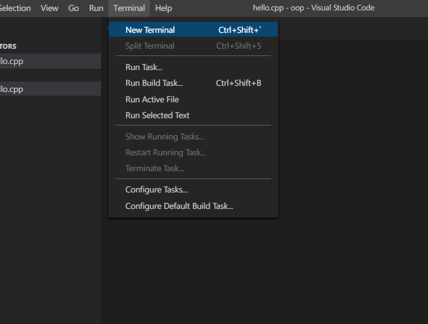

Before moving to the course, please ensure you have setup your coding environment
You need to install few tools
1. vs code (text editor)
2. gcc compiler (to compile cpp file)
Download and install softweres from above link. If you are facing any problem while installing then follow these steps and write you first program.
tdm-gcc installation guide
Uncheck check for update option and click on create
click next with default installation directory
select install type TDM-GCC Recommended C++ and click on install

Now open command prompt and type these commands.
1. cd Desktop
2. mkdir oop
3. cd opp
4. code . & exit
now console screen will close and vs code editor will open at current working directory(oop).

Create a new file by clicking on file icon at left lide as per the picture and name it hello.cpp and write your hello world program. You can take help from picture.

Open embedded terminal by clicking on terminal on tab bar
Now compile your program by typing g++ hello.cpp . It will give you compiled and executable code(a.exe), if your program is error free.
Now type ./a.exe to run program.